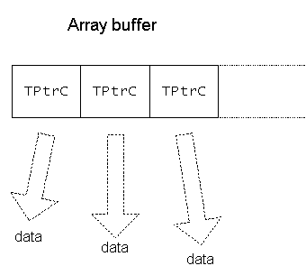
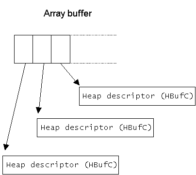

|
| |
A descriptor array is a mechanism which allows descriptors to be aggregated in a convenient way.
Descriptor arrays are specialised arrays which build on the behaviour supplied by dynamic arrays. Descriptors can be inserted, appended, deleted, and accessed in the usual way.
There are two types of descriptor array, based on the way data is represented by the array:
an array whose elements consist of non-modifiable pointer descriptors.
an array whose elements consist of memory pointers.
Either array can be used to represent descriptor data. The difference between them is based on the way they are implemented and this determines which one is most suitable for a given situation.
The array is supplied in two variants:
the 16 bit variant CPtrC16Array containing
TPtrC16 types.
the 8 bit variant CPtrC8Array containing
TPtrC8 types.
The array is also supplied as a build independent type,
CPtrCArray. This is used whenever the descriptor elements
are used to represent text strings. By using the build independent type, the
appropriate variant, either 16 bit or 8 bit, is selected at build time
depending on whether the _UNICODE macro has been defined or
not.
Binary data always requires the 8 bit variant, regardless of the build, and this should be explicitly used in program code.
Explicit use of the 16 bit variant is rare.
The elements of this type of array consist of non-modifiable
pointer descriptors. These pointer descriptors represent the data of the
descriptors added to the array. The diagram below illustrates this. The diagram
is also true for TPtrC8 and
TPtrC16.

|
The elements of this type of array consist of pointers to heap descriptors.
When a descriptor is added to this type of array, a heap descriptor
is allocated, taking its data from the supplied descriptor. The pointer to this
heap descriptor is added as an array element. The diagram below illustrates
this. The diagram is also true for HBufC8 and
HBufC16.

There are two implementations of the array, one using a flat buffer and the other using a segmented buffer.
The flat buffer implementation is supplied in two variants:
the 16 bit variant implemented using a flat buffer, a
CDesC16ArrayFlat, constructed from
TDesC16 types.
the 8 bit variant implemented using a flat buffer, a
CDesC8ArrayFlat, constructed from
TDesC8 types.
The segmented buffer implementation is supplied in two variants:
the 16 bit variant implemented using a segmented buffer, a
CDesC16ArraySeg, constructed from
TDesC16 types.
the 8 bit variant implemented using a segmented buffer, a
CDesC8ArraySeg, constructed from
TDesC8 types.
Both array implementations are also supplied as build independent
types, CDesCArrayFlat and
CDesCArraySeg. These are used whenever the descriptors are
used to represent text strings. By using the build independent types, the
appropriate variants, either 16 bit or 8 bit, are selected at build time
depending on whether the _UNICODE macro has been defined or
not.
Binary data always requires the 8 bit variants, regardless of the build, and this should be explicitly used in program code.
Explicit use of the 16 bit variants is rare.
|
The advantages of using one type over the other are subtle.
When using an array of non-modifiable pointer descriptors, the data
represented by each TPtrC exists independently of the
TPtrC itself. The memory required by the array is simply
that needed to contain the TPtrC elements. The data
represented by the TPtrC descriptors is not copied or
moved. On the other hand, that same data must be guaranteed to remain in memory
if the array is to have any purpose.
When using an array of pointers, a new heap descriptor is allocated
for each descriptor to be added to the array. This increases the total memory
requirements of the array; on the other hand, each array element is smaller
because the size of a pointer is slightly smaller than the size of a
TPtrC object. The original descriptor data can also be
safely discarded once it has been added to the array.
This type also has the advantage that there is no commitment to a concrete descriptor type.
|
Copyright ©2002 Symbian Ltd. 6.1-00174 |
|